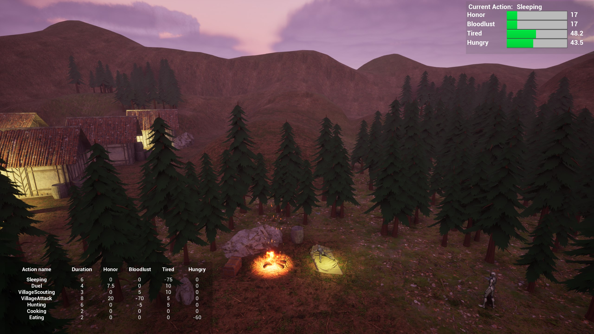

Goal Oriented Behaviour is a technique for the AI of NPCs. The NPCs decide what to do based on their needs. The demo shows this technique and the user can adjust the parameters during runtime to see how these affect the AI.
Back to Projects